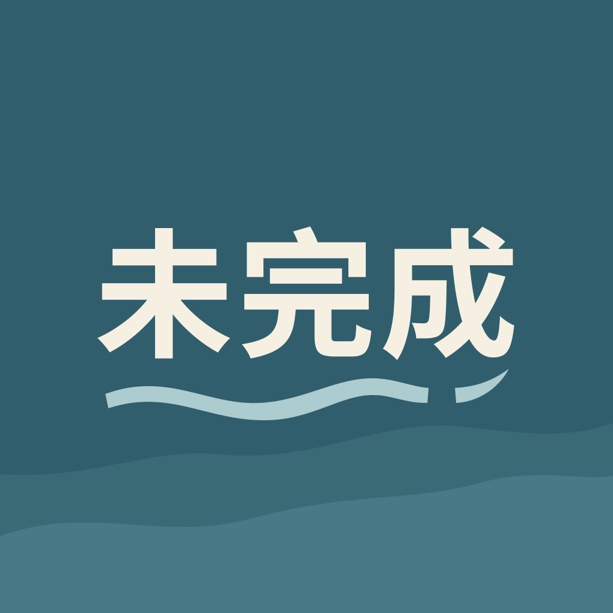

<!doctype html>
<html lang="zh-CN">
<meta charset="utf-8"><meta name="viewport" content="width=device-width, initial-scale=1">
<title>未完成 · 潮汐字标图标草稿</title>
<style>
*{box-sizing:border-box}body{margin:0;background:#f5f3ee;color:#254e5b;font-family:system-ui,sans-serif}main{max-width:1120px;margin:auto;padding:clamp(24px,6vw,64px)}h1{font-size:26px;font-weight:600;margin:0 0 8px}p{color:#6b7f83;margin:0 0 40px}.layout{display:flex;align-items:center;gap:clamp(40px,8vw,100px);flex-wrap:wrap}.hero{width:min(320px,100%);border-radius:24%}.sizes{display:flex;gap:36px;align-items:start;flex-wrap:wrap}figure{margin:0;text-align:center}figure img{border-radius:24%}figcaption{font-size:13px;margin-top:18px;color:#6b7f83}.checks{display:flex;gap:52px;margin-top:48px}.round{border-radius:50%}a{color:#315e6c;text-underline-offset:4px}footer{margin-top:48px;font-size:14px}
</style>
<main><h1>未完成</h1><p>潮汐字标 · 图标草稿</p><div class="layout"><div><div class="sizes"><figure><figcaption>96px</figcaption></figure><figure><figcaption>64px</figcaption></figure><figure><figcaption>48px</figcaption></figure></div><div class="checks"><figure><figcaption>圆形裁切</figcaption></figure><figure><figcaption>黑白轮廓</figcaption></figure></div></div></div><footer><a href="./icon-1024.png">查看原图</a></footer></main>
</html>
